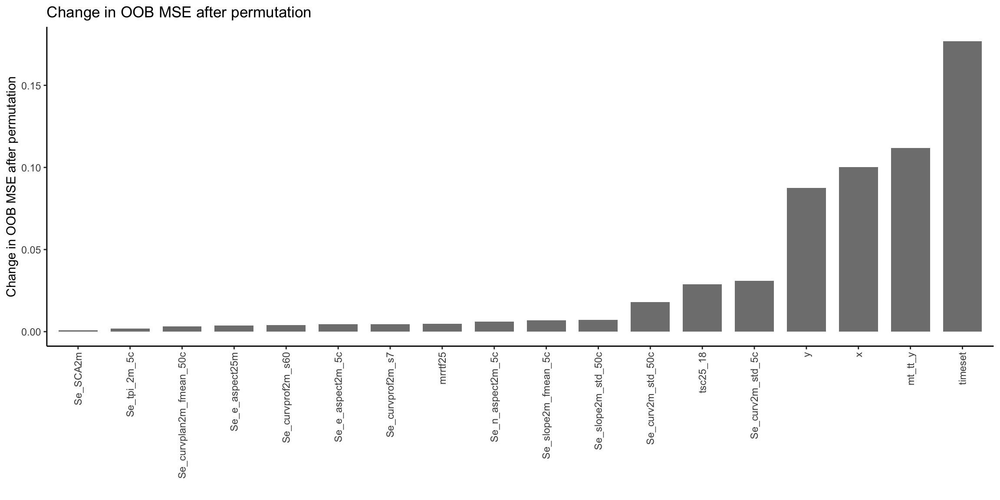
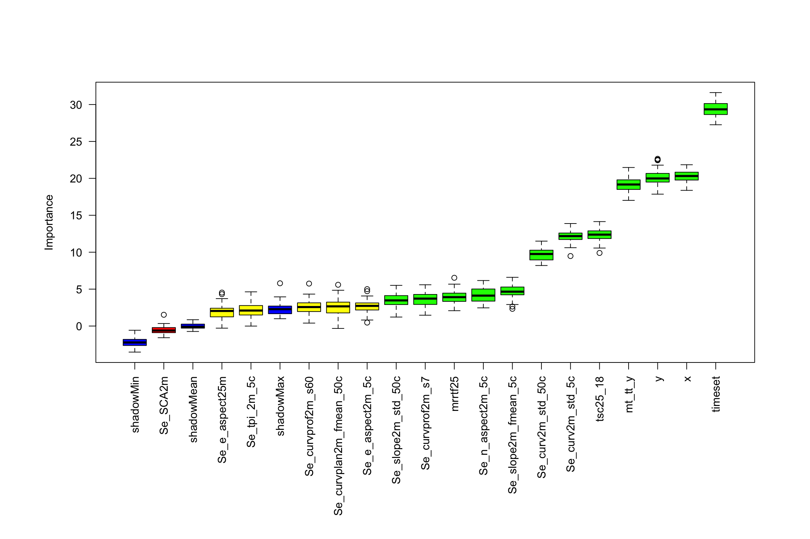

In the previous Chapter, we create a dataframe that holds information on the soil sampling locations and the covariates that we extracted for these positions. Let’s load this datafarme into our environment
Before we can fit the model, we have to specify a few settings. First, we have to specify our response and predictor variables. Then, we have to split our dataset into a calibration and a validation set. Random Forest models cannot deal with NA values, so we have to remove these from our calibration set.
# Specify response: The pH in the top 10cmresponse <-"ph.0.10"# Specify predictors: Remove soil sampling informationpredictors <- data_clean |> dplyr::select(-response, # Remove response variable-site_id_unique, # Remove site ID-tidyr::starts_with("ph"), # No pH information-tidyr::starts_with("waterlog"), # No water-status information-dclass, # No water-status information-dataset) |># No calib./valid informationnames()cat("The response is:", response,"\nThe predictors are:", paste0(predictors[1:8], sep =", "), "...")
The response is: ph.0.10
The predictors are: timeset, x, y, be_gwn25_hdist, be_gwn25_vdist, cindx10_25, cindx50_25, geo500h1id, ...
# Split dataset into calibration and validationdata_cal <- data_clean |> dplyr::filter(dataset =="calibration")data_val <- data_clean |> dplyr::filter(dataset =="validation")# Filter out any NA to avoid error when running a Random Forestdata_cal <- data_cal |> tidyr::drop_na()data_val <- data_val |> tidyr::drop_na()# A little bit of verbose output:n_tot <-nrow(data_cal) +nrow(data_val)perc_cal <- (nrow(data_cal) / n_tot) |>round(2) *100perc_val <- (nrow(data_val) / n_tot) |>round(2) *100cat("For model training, we have a calibration / validation split of: ", perc_cal, "/", perc_val, "%")
For model training, we have a calibration / validation split of: 75 / 25 %
Alright, this looks all good. We have our response and predictor variables saved for easy access later on and the 75/25 split of calibration and validation data looks good too. We can now move on to model fitting!
3.3 Model training
To fit a Random Forest model that predicts the soil pH in the top 10cm, we are looking at different model setups. These setups always train a Random Forest model but differ in the complexity that we intentionally add to improve the final model. If you need a recap on Random Forests, have a look at the introduction given in AGDS 1.
3.3.1 Basic model
Let’s start with the basic model, where we use the {ranger} package with the pre-defined hyperparameters.
# ranger() crashes when using tibbles, so we are using the# base R notation to enter the datarf_basic <- ranger::ranger( y = data_cal[, response], # Response variablex = data_cal[, predictors], # Predictor variablesseed =42, # Specify the seed for randomization to reproduce the same model againnum.threads = parallel::detectCores() -1) # Use all but one CPU core for quick model training# Print a summary of fitted modelrf_basic |>print()
Ranger result
Call:
ranger::ranger(y = data_cal[, response], x = data_cal[, predictors], seed = 42, num.threads = parallel::detectCores() - 1)
Type: Regression
Number of trees: 500
Sample size: 605
Number of independent variables: 98
Mtry: 9
Target node size: 5
Variable importance mode: none
Splitrule: variance
OOB prediction error (MSE): 0.2804814
R squared (OOB): 0.5252541
Predicting categories with Random Forests
If our response variable was a categorical and not a continuous variable, we would have to set the argument probability = TRUE. The output would then be a probability map from 0-100%.
Although we only used the pre-defined parameters, we already get a fairly good out-of-bag (OOB) \(R^2\) of 0.53 and a MSE of 0.28. Let’s see how we can improve our model further.
3.3.2 Model with weights
Sometimes we know that a subset of our dataset is more trustworthy than the rest. For example, when you are using a gap-filling technique to interpolate data, that gap-filled data is less trustworthy than the actually measured data. Informing the model algorithm that it should weigh certain data entries more than other can change the importance of variables and the final model performance.
In our dataset, we have information on whether the pH values were measured in the field - which is less precise - or in the lab. Also, we have to different lab methods. All of this information is held in the suffix of the timeset variable, so let’s assign weights according on the quality of the pH data as follows: 1 for CaCl\(_2\) lab measurement (no suffix), 0.9 for pedotransfer from another lab method (suffix _ptf), and 0.7 for field data (suffix _field). For this, we create a weight-matching vector:
weights <- data_cal |> dplyr::mutate(# Create a new variable 'weight' which holds only 1'sw =1,# Check the suffix in each row and if true, give a new weight. If false, keep the old weight.w =ifelse(stringr::str_detect(timeset, "_field"), 0.9, w),w =ifelse(stringr::str_detect(timeset, "_ptf"), 0.7, w) )# Quality check if everything worked:set.seed(42)weights |> dplyr::select(timeset, w) |> dplyr::slice_sample(n =8) |># Pick 8 random rows knitr::kable()
timeset
w
d1979_2010
1.0
d1968_1974_field
0.9
d1968_1974_field
0.9
d1968_1974_field
0.9
d1968_1974_field
0.9
d1968_1974_ptf
0.7
d1968_1974_field
0.9
d1968_1974_field
0.9
It is always a good idea to do quality checks when wrangling! Here we see that our weight attribution code worked as expected, so we can move on to model fitting.
rf_weighted <- ranger::ranger( y = data_cal[, response], # Response variablex = data_cal[, predictors], # Predictor variablescase.weights = weights[, "w"], # Add weights to inputseed =42, # Specify seed for randomization to reproduce the same model againnum.threads = parallel::detectCores() -1) # Use all but one CPU core for quick model training# Print a summary of fitted modelrf_weighted |>print()
Ranger result
Call:
ranger::ranger(y = data_cal[, response], x = data_cal[, predictors], case.weights = weights[, "w"], seed = 42, num.threads = parallel::detectCores() - 1)
Type: Regression
Number of trees: 500
Sample size: 605
Number of independent variables: 98
Mtry: 9
Target node size: 5
Variable importance mode: none
Splitrule: variance
OOB prediction error (MSE): 0.2874622
R squared (OOB): 0.5134383
Not much has changed compared to our previous model. We see that the \(R^2\) and MSE got negligibly worse but as a trade-off we gained more trust in our model.
3.4 Model interpretation
3.4.1 Variable importance based on OOB-Error
Our model has 98 variables but we have no idea if each of them should really be in the model and if we are not just fitting noise in the dataset. To investigate this issue, the ranger() function takes an argument called importance. We can set this argument either to follow the permutation method, whereby the algorithm randomly permutes values of each variable and measures the resulting decrease in model accuracy. A larger decrease indicates a more important variable. If the code runs slow, you can also use the faster impurity method (see more information here).
Assessing the variable importance gives us a feeling for what variables we should keep or drop from the dataset. The ranger-model stores this information if we enter a importance method. The code below accesses the model’s variable importance and sorts the variables with decreasing importance.
# Let's run the weighted model again but with recording the variable importancerf_weighted <- ranger::ranger( y = data_cal[, response], # Response variablex = data_cal[, predictors], # Predictor variablescase.weights = weights[, "w"],# Add weights to inputimportance ="permutation", # Pick permutation to calculate variable importanceseed =42, # Specify seed for randomization to reproduce the same model againnum.threads = parallel::detectCores() -1) # Use all but one CPU core for quick model training# Extract the variable importance and create a long tibblevi_rf_weighted <- rf_weighted$variable.importance |> dplyr::bind_rows() |> tidyr::pivot_longer(cols = dplyr::everything(), names_to ="variable")# Plot variable importance, ordered by decreasing valuep <- vi_rf_weighted |> ggplot2::ggplot(ggplot2::aes(x =reorder(variable, value), y = value)) + ggplot2::geom_bar(stat ="identity", fill ="grey50", width =0.75) + ggplot2::labs(y ="Change in OOB MSE after permutation", x ="",title ="Change in OOB MSE after permutation") + ggplot2::theme_classic() + ggplot2::theme(axis.text.x = ggplot2::element_text(angle =90, vjust =0.5, hjust=1))# Display plotp

What do we see here? The y-axis shows the decrease in model performance when the respective variable is randomly permuted and, therefore, denotes the importance of a variable. The higher the value, the stronger the effect of permutation on the model performance, the more important the variable. Also, we see that a large part of our covariates have practically no power to predict the pH and can therefore be removed from the model. But how do we determine what variable to pick for our final model? Do we want a maximum number of predictors? Do we want a set of the top n predictors that make up a certain percentage of the total variable importance?
3.4.2 Boruta Algorithm
One common option to generalize variable selection is the “Boruta-Algorithm”, which itself is based Random Forests. In essence, the algorithm creates “shadows” of your original data, where each of the predictor value is randomly permuted, which destroys the predictive power of the variable. Then, the algorithm iterates over these “shadows” and assess for each variable whether its permutation has a substantial effect on the model performance or not. E.g., if a model trained on a variable’s shadow performs constantly worse than when trained on the original values, that variable is assessed as important. The algorithm categorizes all variables into “to reject”, “to consider”, and “to keep”. Luckily, we do not have to write this algorithm ourselves but can use the {Boruta} package:
set.seed(42)bor <- Boruta::Boruta(y = data_cal[, response], x = data_cal[, predictors],maxRuns =50, # Number of iterations. Set to 30 or lower if it takes too longnum.threads = parallel::detectCores()-1)# Plot variable importance, the Boruta-output can be directly fed into base R plot()par(oma =c(8,3,2,2)) # enlarge plot below for long variable labelsplot(bor, xlab ="", ylab ="Importance",las =2, )

# Check whether the most important variables from Boruta-Algorithm are similar as the# important variables from the weighted Random Forest modelbor_top10 <- Boruta::attStats(bor) |> tibble::rownames_to_column() |> dplyr::arrange(dplyr::desc(meanImp)) |> dplyr::slice_head(n =10) |> dplyr::pull(rowname)vi_top10 <- vi_rf_weighted |> dplyr::slice_head(n =10) |> dplyr::pull(variable)cbind(vi_top10, bor_top10) |> knitr::kable(col.names =c("RF Top 10", "Boruta Top 10"))
RF Top 10
Boruta Top 10
timeset
timeset
x
y30
y
y
be_gwn25_hdist
mt_rr_y
be_gwn25_vdist
y60
cindx10_25
x
cindx50_25
x30
geo500h1id
mt_tt_y
geo500h3id
x60
lgm
Se_TWI2m_s15
We see that apart from the timeset variable, the variable importance calculated by the Boruta-Algorithm differs quite a bit, compared to the simple variable importance assessment built into the ranger() function. To move forward, we could keep only variables that were classified as “to keep” or “to consider” by the Boruta-Algorithm:
# Save relevant data for model testing in the next chapter.# Pick rf to save:rf <- rf_basic# Extract predictors used in this rfpredictors <- rf$forest$independent.variable.namessaveRDS(rf_basic, here::here("data/rf_for_ph0-10.rds"))saveRDS(data_cal[, c(response, predictors)], here::here("data/cal_for_ph0-10.rds"))saveRDS(data_val[, c(response, predictors)], here::here("data/val_for_ph0-10.rds"))